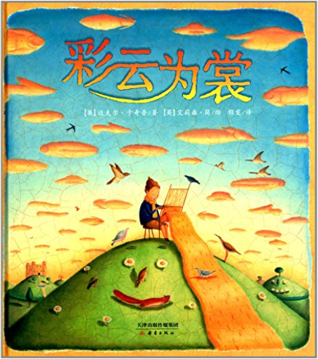
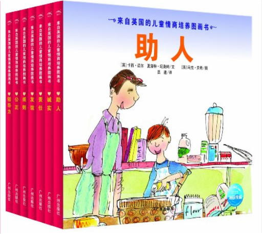
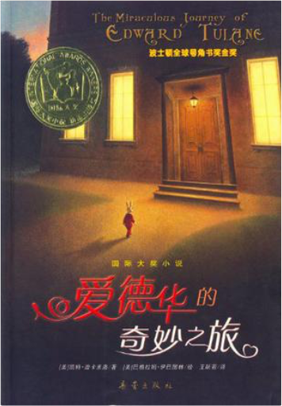
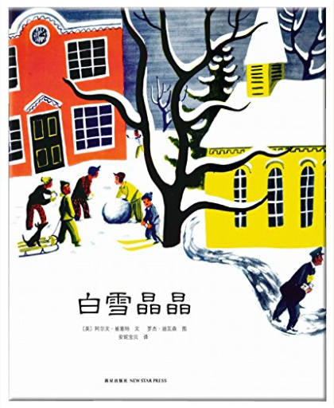

彩云为裳迈克尔·卡奇普  《尚童童书:彩云为裳》内容简介：从前，有一个小男孩，他从妈妈那里学到了一个很棒的本领——用天上的云朵做出美妙的衣裳。小男孩很明智，他总是纺出不多不少的线，织出刚刚好的布。一天，小男孩戴着一条云朵围巾去赶集，结果被国王盯上了。贪婪的国王命令他织一条很长很长的围巾，还要做一件大披风和很多条漂亮的裙子。小男孩没有办法，只能照做。渐渐地，天上的云都被用光了，从此再也没有下过雨，这可怎么办呢？ 来自英国的儿童情商培养图画书迈尔 《来自英国的儿童情商培养图画书》引进自英国Heinemann出版社，由知名童书作家和国际著名插画家共同打造。国际先进情商教育理念，给家长和孩子以明确、实用的指引。可爱的图画和贴心的文字，让孩子自己领悟人格塑造的重要性和方法，健康快乐地成长。是画面颇具美感的图画书，也是文字优美的文学书，更是情商培养的学习书。 国际大奖小说:爱德华的奇妙之旅迪卡米洛 《爱德华的奇妙之旅》主要内容：从前，在埃及街旁的一所房子里，住着一只名叫爱德华·图雷恩的瓷兔子。那小兔子很是自鸣得意，而且理由充足：他为一个名叫阿比林的女孩所拥有，她对它关怀备至，崇敬有加。 白雪晶晶阿尔文·崔塞特 第一片雪花从灰蓝色的天空中飘落，邮递员穿上雨靴，农夫去仓库取雪铲，警察扣好了大衣，他的妻子检查药橱柜里的咳嗽药水，而孩子们则欢呼雀跃、手舞足蹈，用舌尖去捕捉飘落的雪花……  Scratch少儿趣味编程阿部和广 Scratch少儿趣味编程阿部和广 Scratch是麻省理工学院设计开发的一款编程工具，是适合少儿学习编程和交流的工具和平台，有中文版且完全免费。《Scratch少儿趣味编程》结合孩子们学习的语文、数学、科学、社会、音乐、体育等科目，手把手地教大家如何用Scratch设计程序(如设计一个自动写作文的程序)，配合各式卡通形象，通俗易懂，寓教于乐。麻省理工学院教授米切尔·瑞斯尼克作序推荐。  国际大奖小说:魔镜霍尔迪·塞拉·依·法布拉 国际大奖小说:魔镜霍尔迪·塞拉·依·法布拉 《国际大奖小说:魔镜(注音版)》是一部带有魔幻色彩的小说。一个叫哈维尔的男孩在学校里经历了倒霉的一天后，在回家的路上遇到了一位神秘的白胡子老爷爷。老爷爷卖给他一面能预知未来的魔镜。哈维尔太依赖魔镜了，以至于疏于用功，学习成绩一塌糊涂……经历了两次失败后，哈维尔终于懂得了老爷爷卖给他魔镜的真正用意了。 |
 Made with Delicious Library
Made with Delicious LibraryGuangzhou, AP zipflap congrotus delicious library Yv, Jarod